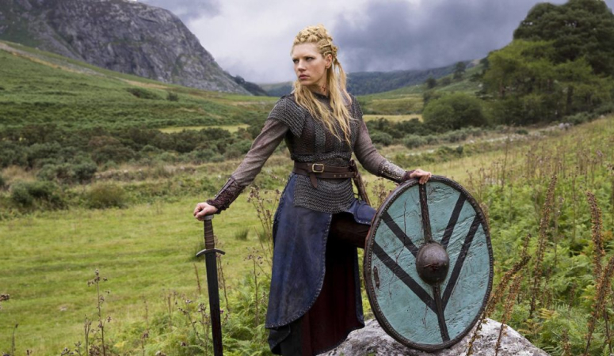
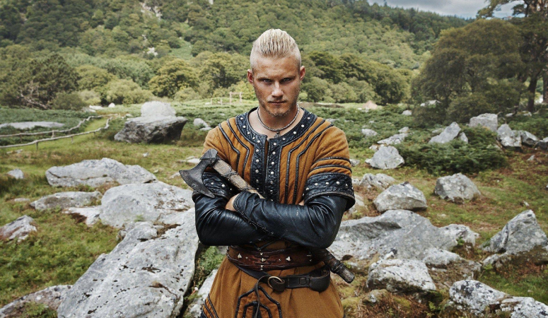
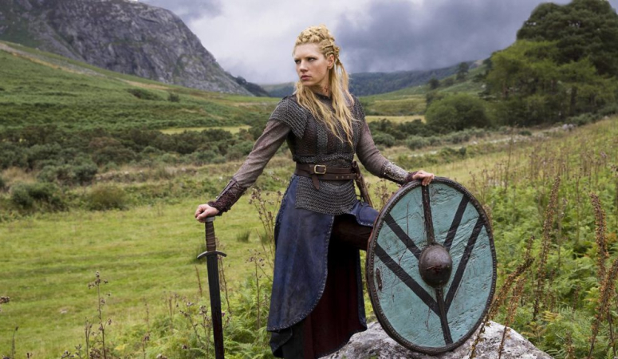
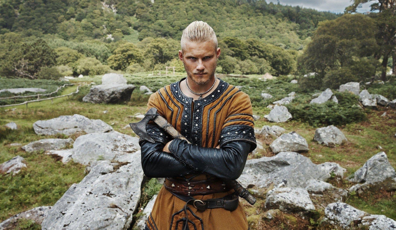

Раґнар
Раґнар Лодброк (др.-сканд. Ragnarr Loðbrók) - напівлегендарний скандинавський конунг з роду Інглінгів, ключовий персонаж серіалу.
Вправний воїн та амбітний вождь, Раґнар протягом майже всього свого життя йде шляхом вікінга. Розсікаючи море в пошуках бойової слави та наживи, він прагне знайти нові знання, відкрити невідомі землі й змінити нелегку долю свого народу, який живе у суворих умовах Скандинавського півострова. Рагнар починає свій шлях як звичайний воїн-вікінг, васал ярла Харальдсона.
Лагерта
Лагерта була першою та колишньою дружиною Раґнара Лодброка а також володарка Каттегату. Лагерта була ярлом і запеклою щитоносицею. Вона билася в щитовій стіні поряд з чоловіками.
Лагерта дарує Раґнару двох дітей: сина Бйорна й доньку Гіду. Любов Раґнара й Лагерти починає руйнуватися, коли Гіда гине від епідемії, а третя дитина народжується мертвою. Коли в будинок Раґнара приходить вагітна від нього Аслауг, Лагерта розриває шлюб і разом з Бйoрном відправляється в Хедебю, де виходить заміж за жорстокого ярла Сіґварда. Убивши нелюбого чоловіка, войовниця займає його трон. Ставши ярлом, вона залишається вірною подругою Раґнару, беручи участь в очолюваних ним походах.
Бйьорн
Бйорн Залізнобокий (др.-сканд. Björn Járnsíða, швед. Björn Järnsida) - напівлегендарний скандинавський конунг, засновник шведської королівської династії Мунсьо. У серіалі - син Раґнара Лодброка та Лагерти; брат Гіди; єдинокровний брат Уббе, Хвітсерка, Сіґурда та Івара.
Сильний та рішучий. Бйорн має намір стати великим воїном, лідером та першовідкривачем. Він повністю розділяє спрагу свого батька до пригод й підтримує його, регулярно беручи участь у грабіжницьких набігах вікінгів. Набравшись досвіду у боях та мореплавстві, очолює власні походи.
 


